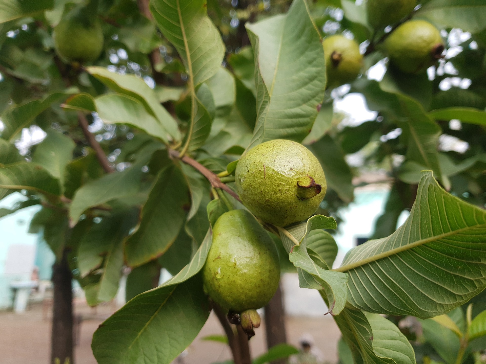
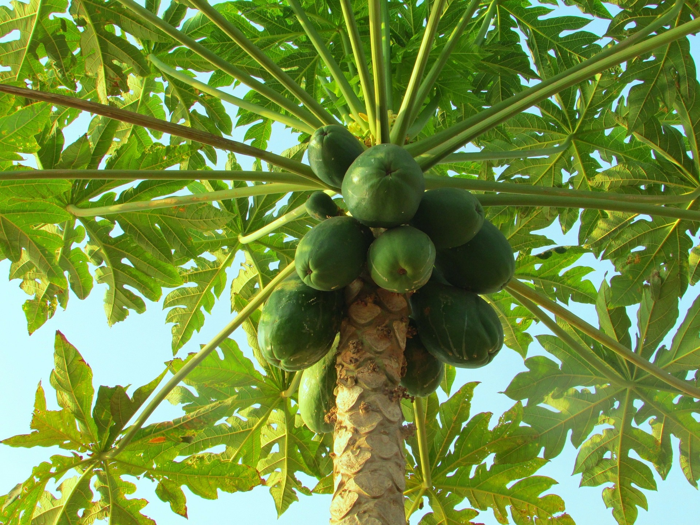
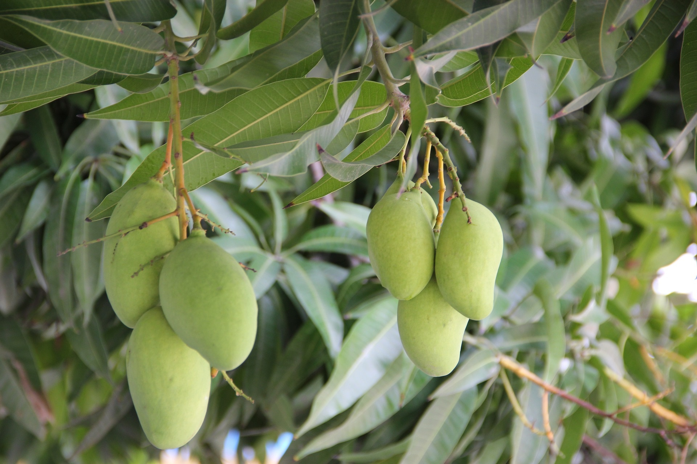
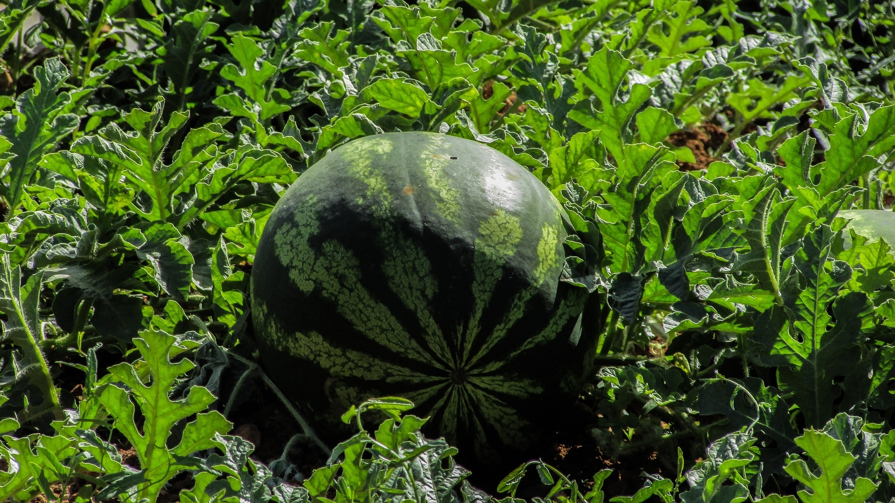
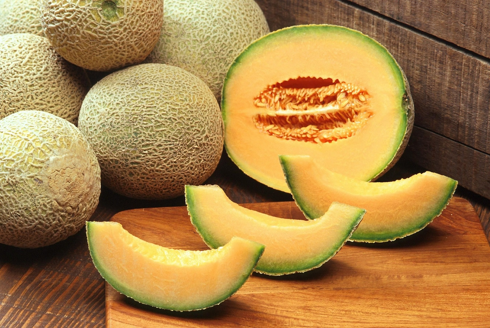

𝓔-कृषि
𝓔-कृषि

Climate: Successful Guava cultivation is grown under tropical and
sub-tropical climate. In areas with distinct winter season, the yield tends to
increase.It can be grown up to an altitude of 1515 m above mean sea level. Older plants can
tolerate drought. High temperature can cause fruit
drop. The best soils for cultivation are deep, loamy and well
drained.
2.soil:Optimum temperature is 23-26oC though it can withstand up to 46oC. It is so well
acclimatized that at present it is grown throughout the length and breadth of the country
from sea level to 1300 m altitude. However, it produces abundant crop of better quality in
areas having a distinct dry and moderate winter. Guava seems indiscriminate as to soil,
doing equally well on heavy clay, light sand, gravel bars near streams, or on limestone; and
tolerates a pH range from 4.5 to 9.4.

1.Climate:No need to water papaya plant in rainy season. Water papaya tree
every 8-10 days in winter and twice a week in summers.
Drainage is very essential, water logging may cause collar root. Earth up the base
of the tree and drain off excess water.
The papaya starts bearing fruits within a year of transplanting.
The life of papaya tree is about 3 years.
2.Soil:Night temperature below 120-140 C for several hours during winter season affects its
growth and production severely. It is very much sensitive to frost, strong winds and water
stagnation.

1.Climate:TMango is very well adapted to tropical and subtropical
climates.
It thrives well in almost all the regions
0 0 of the country from sea level to an altitude of 600 m. The ideal temperature
range for mango is 24 -30 C
during the growing season, along with high humidity. A rainfall range of 890-1,015
mm in a year is
considered as ideal for growing mangoes
2.Soil Preparation:
Prior to planting, use 300g of fertiliser containing phosphorus, potassium and trace
elements or well rotted animal manure. Mix with topsoil and place at the bottom of the
planting hole. Refill with topsoil and plant the trees deep enough to allow the root-ball to
be covered completely with soil

1.Climate: Watermelon (Citrullus lanatus) is a warm-season frost-tender
annual plant that produces large, juicy fruits late in the summer. The fruits may be
round or oblong, have pink, red or yellow flesh and solid, marbled or striped skins.
For optimum fruit production watermelon requires a long growing season with lots of
warmth and sun.
2.Soil:Melons grow best on well-drained, sandy loam soils, with a pH between 6.0 and 6.5.
Soils with a pH less than 6.0 will produce plants with yellow foliage that set few or no
fruit. You can improve your soil by adding well-rotted manure or compost in spring or fall.

1Climate:Muskmelon is usually grown from late Novembers to late February
and some off-season varieties are also grown by our Indian farmers. Muskmelons can grow
better at the temperatures range in between 180C to 25 0C and temperatures below 12 0C the
plant growth may be halted with poor performance and muskmelons can withstand upto 45 0C
temperature among some varieties.
2.Soil:Muskmelon crop grows good in different types of soils. The loamy soils are said to be
best to grow muskmelons and in sandy type loamy soils the crop may complete early and clay
loamy soil the crop may get ready to harvest little late. The best pH range of the soil for
muskmelon growing is 5.6 – 6.3.